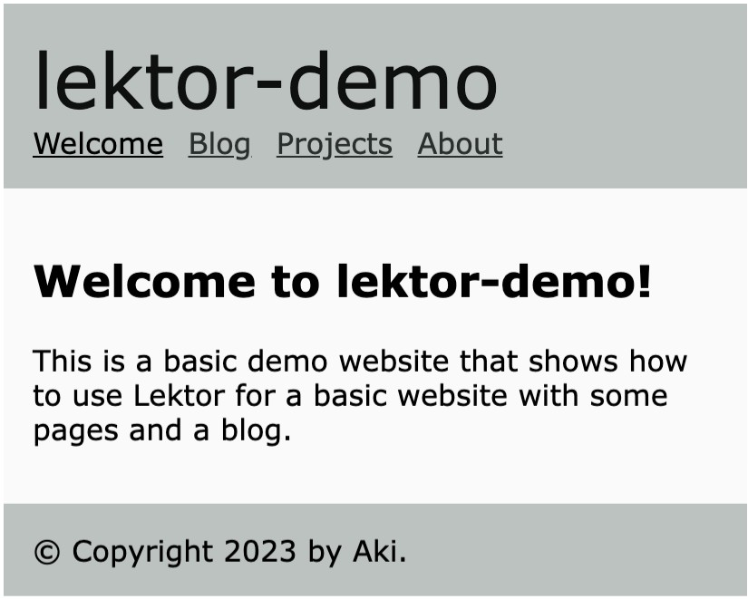

フォントやHtml要素のスタイルを検討する前に、モバイルへ表示を切り替える為のメディアクエリを書きます。
style.cssでは、 header, footer, pageの幅がwidth:760pxに固定されているので、 max-widht:760pxに変更します。
ブレークポイントでの変更値は次の通りです。
/* responsive */
header, footer, div.page {
width: initial;
max-width: 760px;
}
@media screen and (max-width: 576px) {
body {
margin: 2px;
}
header, footer, div.page {
padding: 1rem;
}
}
<meta charset="utf-8">
<meta name="viewport" content="width=device-width, initial-scale=1.0">
<link rel="stylesheet" href="{{ '/static/style.css'|url }}">
<link rel="stylesheet" href="{{ '/static/override.css'|url }}">
